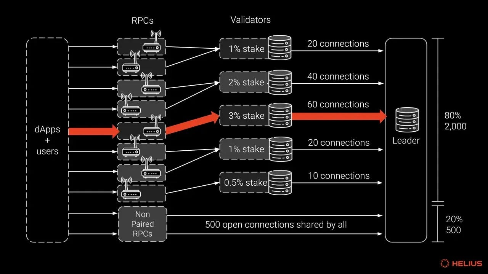

Suggest an edit

Gulfstream
Gulfstream의 정의
‘걸프 스트림(Gulf Stream)’이란, 네트워크에서 한 노드가 트랜잭션을 수신한 순간부터 해당 슬롯의 리더에게 전달되어 TPU(Transaction Processing Unit)의 Fetch Stage에서 받아들여지기까지의 전 과정을 가리키는 용어입니다.
즉 일반적으로는 User-> RPC Node -> Validator -> Leader의 fetch 까지의 과정을 의미합니다.
걸프스트림은 블록 생성 데이터가 리더로부터 나가는 과정인 터빈(Turbine)과는 반대로, 트랜잭션 데이터가 리더에게 들어오는 과정을 담당합니다.

즉 일반적으로는 User-> RPC Node -> Validator -> Leader의 fetch 까지의 과정을 의미합니다.
걸프스트림은 블록 생성 데이터가 리더로부터 나가는 과정인 터빈(Turbine)과는 반대로, 트랜잭션 데이터가 리더에게 들어오는 과정을 담당합니다.
Mempool 없는 아키텍처
이더리움,비트코인과 같은 기존 블록체인들은 '멤풀(Mempool)'이라는 공개된 대기 공간에 트랜잭션을 보관하고 가십 프로토콜을 통해 네트워크 전체에 전파합니다. 이 방식은 네트워크 상태에 따라 트랜잭션 처리가 며칠 또는 몇 주까지 지연될 수 있는 문제를 가집니다.
예를 들면 거래 수수료를 시장 평균보다 현저하게 낮게 설정할 경우, 멤풀에서 이들 트랜잭션은 계속 후순위로 밀려 멤풀에 남아있는 경우가 생길 수 있습니다.
솔라나는 멤풀을 사용하지 않기 때문에 이러한 문제가 나타나지 않습니다. 대신 솔라나는 위의 그림처럼 모든 트랜잭션을 미리 정해진 리더에게 직접 전달합니다. 또한, Tx에 Recent BlockHash를 포함하게 합니다.
여기서 Recent Blockhash는 Solana 네트워크에서 가장 최근에 생성된 블록의 헤더를 SHA-256으로 해싱해 얻은 32바이트(256비트) 해시값으로 Tx가 보내지는 시점에 가장 최근 블록을 명시한다고 생각하면 됩니다. 이 블록해시는 약 1분(150 슬롯) 동안만 유효하며, 이 시간이 지나면 트랜잭션은 자동으로 네트워크에서 폐기됩니다. 이는 처리되지 않은 트랜잭션이 계속 떠도는 것을 방지하고, 트랜잭션 중복을 감지하는 역할을 합니다.
여기서 Recent Blockhash는 Solana 네트워크에서 가장 최근에 생성된 블록의 헤더를 SHA-256으로 해싱해 얻은 32바이트(256비트) 해시값으로 Tx가 보내지는 시점에 가장 최근 블록을 명시한다고 생각하면 됩니다. 이 블록해시는 약 1분(150 슬롯) 동안만 유효하며, 이 시간이 지나면 트랜잭션은 자동으로 네트워크에서 폐기됩니다. 이는 처리되지 않은 트랜잭션이 계속 떠도는 것을 방지하고, 트랜잭션 중복을 감지하는 역할을 합니다.
멤풀이 필요없는 이유: 결론적으로 솔라나는 모든 노드들이 멤풀을 유지하며 트랜잭션을 처리하는 것이 아닌, 리더에게 트랜잭션을 전달하면 되기 떄문에 멤풀이 필요없습니다. 또한, Recent Blockhash를 포함하여 일정시간 이상 처리되지 않은 Tx는 폐기됩니다.
Stake-Weighted Quality of Service (SWQoS)

2024년 초, 솔라나는 스팸 방지와 시빌 공격 방어를 강화하기 위해 “스테이킹 기반 QoS”라는 새로운 매커니즘을 도입하였습니다.
Stake-Weighted QoS(SWQoS)는 Validator의 지분 비율에 따라 리더(현재 슬롯의 블록 생산자)와 맺을 수 있는 QUIC 연결 수를 차등화해 주는 메커니즘입니다. 네트워크가 혼잡할 때 지분이 많은 Validator가 더 많은 대역폭을 확보해 트랜잭션 지연·드롭 확률을 낮출 수 있습니다.
리더의 용량 중 80%는 SWQoS에 할당되고, 나머지 20%는 지분이 없는 노드가 보내는 트랜잭션 메시지에 할당됩니다. 그림에서 확인할 수 있듯이 2000개의 연결은 SWQoS로 받는 반면, 500개의 연결은 지분이 없는 노드가 보내는 트랜잭션 메시지에 할당된 것을 확인할 수 있습니다.
Stake-Weighted QoS(SWQoS)는 Validator의 지분 비율에 따라 리더(현재 슬롯의 블록 생산자)와 맺을 수 있는 QUIC 연결 수를 차등화해 주는 메커니즘입니다. 네트워크가 혼잡할 때 지분이 많은 Validator가 더 많은 대역폭을 확보해 트랜잭션 지연·드롭 확률을 낮출 수 있습니다.
리더의 용량 중 80%는 SWQoS에 할당되고, 나머지 20%는 지분이 없는 노드가 보내는 트랜잭션 메시지에 할당됩니다. 그림에서 확인할 수 있듯이 2000개의 연결은 SWQoS로 받는 반면, 500개의 연결은 지분이 없는 노드가 보내는 트랜잭션 메시지에 할당된 것을 확인할 수 있습니다.